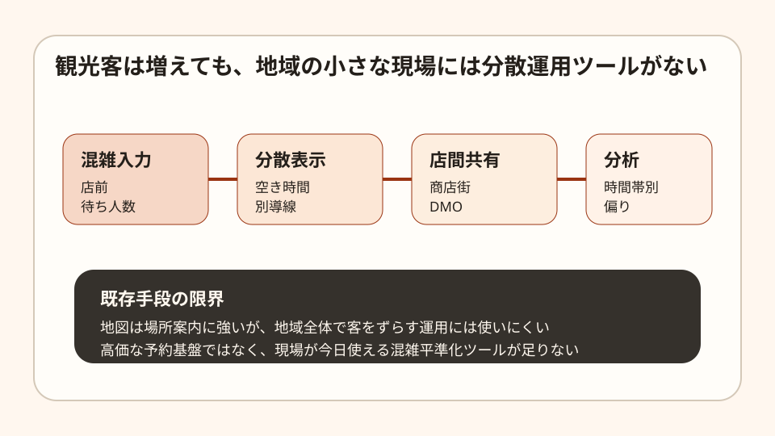

Question Note
地域観光の混雑を平準化する小規模オペレーションサービス案

JNTOの2026年4月推計では、訪日外客数は369万2,200人で2026年の単月最高でした。 同時に第5次観光立国推進基本計画では、住民生活の質の確保とオーバーツーリズムの未然防止が 前提に置かれています。
社会問題の切り方
大都市全体の観光政策ではなく、商店街や観光導線が短い地区に絞ると、個人でも扱える課題になります。
| 課題 | 既存手段の限界 | 欲しい機能 |
|---|---|---|
| 同じ時間に集中 | 地図は分散誘導が弱い | 空き時間の見える化 |
| 店ごとに混雑状況が見えない | SNSは断片的 | 店前簡易入力 |
| 住民負担の把握不足 | 定量化しづらい | 時間帯別レポート |
100万円規模の市場仮説
初年度は観光導線が集中しやすい小規模エリア 30団体を見込み客とします。DMOや商店会単位で売る前提です。
| 項目 | 仮定 | 結果 |
|---|---|---|
| 到達可能団体数 | 30 | 直接営業できる範囲 |
| 初年度シェア | 20% | 6団体 |
| 年額利用料 | 120,000円 | 720,000円 |
| 初期設定支援 | 30,000円 x 6 | 180,000円 |
| 月次分析レポート | 10,000円 x 12回の一部導入 | 120,000円 |
| 初年度売上 | 合計 | 1,020,000円 |
必要要件と収益化
- 店舗やスタッフが数秒で混雑度を入れられるUI
- 観光客向けの混雑回避表示
- エリア単位の時系列分析
- サブスク + 分析レポートのB2B課金
必要な実行者は1名です。必要スキルはWeb実装、ダッシュボード、現地導線の観察、商店会との調整です。